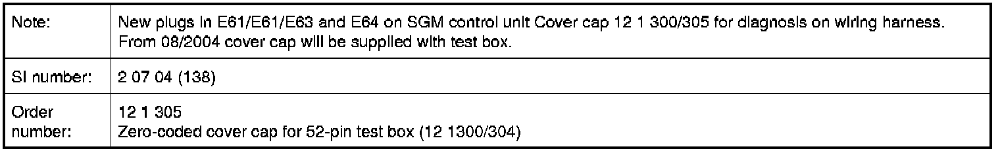

Operation CHARM
: Car repair manuals for everyone.
Home
>>
BMW
>>
2007
>>
X3 3.0si (E83) L6-3.0L (N52K)
>>
Repair and Diagnosis
>>
Powertrain Management
>>
Ignition System
>>
Tools and Equipment
>>
12 1 305 Zero-Coded Cover Cap for 52-Pin Test Box (12 1300/304)
12 1 305 Zero-Coded Cover Cap for 52-Pin Test Box (12 1300/304)
12 1 305 Zero-coded cover cap for 52-pin test box (12 1300/304)
